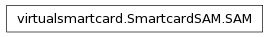

SmartcardSAM Module¶

- class virtualsmartcard.SmartcardSAM.SAM(PIN, cardNumber, mf=None, cardSecret=None, default_se=<class 'virtualsmartcard.SEutils.Security_Environment'>)¶
Bases: object
This class is used to store the data needed by the SAM. It includes the PIN, the master key of the SAM and a hashmap containing all the keys used by the file encryption system. The keys in the hashmap are indexed via the path to the corresponding container.
- FSdecrypt(data)¶
Decrypt the given data, using the parameters stored in the SAM. Right now we do not encrypt the data. In memory encryption might or might not be added in a future version.
- FSencrypt(data)¶
Encrypt the given data, using the parameters stored in the SAM. Right now we do not encrypt the data. In memory encryption might or might not be added in a future version.
- _get_referenced_key(p1, p2)¶
This method returns the key specified by the p2 parameter. The key may be stored on the cards filesystem.
Parameters: - p1 – Specifies the algorithm to use. Needed to know the keylength.
- p2 –
Specifies a reference to the key to be used for encryption
b8 b7 b6 b5 b4 b3 b2 b1 Meaning 0 0 0 0 0 0 0 0 No information is given 0 Global reference data(e.g. MF specific key) 1 Specific reference data(e.g. DF specific key) x x x x x Number of the secret Any other value RFU
- change_reference_data(p1, p2, data)¶
Change the specified referenced data (e.g. CHV) of the card
- erase_SE(SEID)¶
Erases a Security Environment stored under SEID from the SAM
- external_authenticate(p1, p2, data)¶
Authenticate the terminal to the card. Check whether Terminal correctly encrypted the given challenge or not
- generate_public_key_pair(p1, p2, data)¶
- get_card_number()¶
- get_challenge(p1, p2, data)¶
Generate a random number of maximum 8 Byte and return it.
- internal_authenticate(p1, p2, data)¶
Authenticate card to terminal. Encrypt the challenge of the terminal to prove key posession
- manage_security_environment(p1, p2, data)¶
- mutual_authenticate(p1, p2, mutual_challenge)¶
Takes an encrypted challenge in the form ‘Terminal Challenge | Card Challenge | Card number’ and checks it for validity. If the challenge is successful the card encrypts ‘Card Challenge | Terminal challenge’ and returns this value
- parse_SM_CAPDU(CAPDU, header_authentication)¶
Parse a command APDU protected by Secure Messaging and return the unprotected command APDU
- perform_security_operation(p1, p2, data)¶
- protect_result(sw, unprotected_result)¶
Protect a plain response APDU by Secure Messaging
- restore_SE(SEID)¶
Restores a Security Environment from the SAM and replaces the current SE with it
- set_MF(mf)¶
Setter function for the internal reference to the Filesystem. The SAM needs a reference to the filesystem in order to store/retrieve keys.
- set_asym_algorithm(cipher, keytype)¶
Parameters: - cipher – Public/private key object from used for encryption
- keytype – Type of the public key (e.g. RSA, DSA)
- store_SE(SEID)¶
Stores the current Security environment in the secure access module. The SEID is used as a reference to identify the SE.
- verify(p1, p2, PIN)¶
Authenticate the card user. Check if he entered a valid PIN. If the PIN is invalid decrement retry counter. If retry counter equals zero, block the card until reset with correct PUK
- virtualsmartcard.SmartcardSAM.get_referenced_cipher(p1)¶
P1 defines the algorithm and mode to use. We dispatch it and return a string that is understood by CryptoUtils.py functions